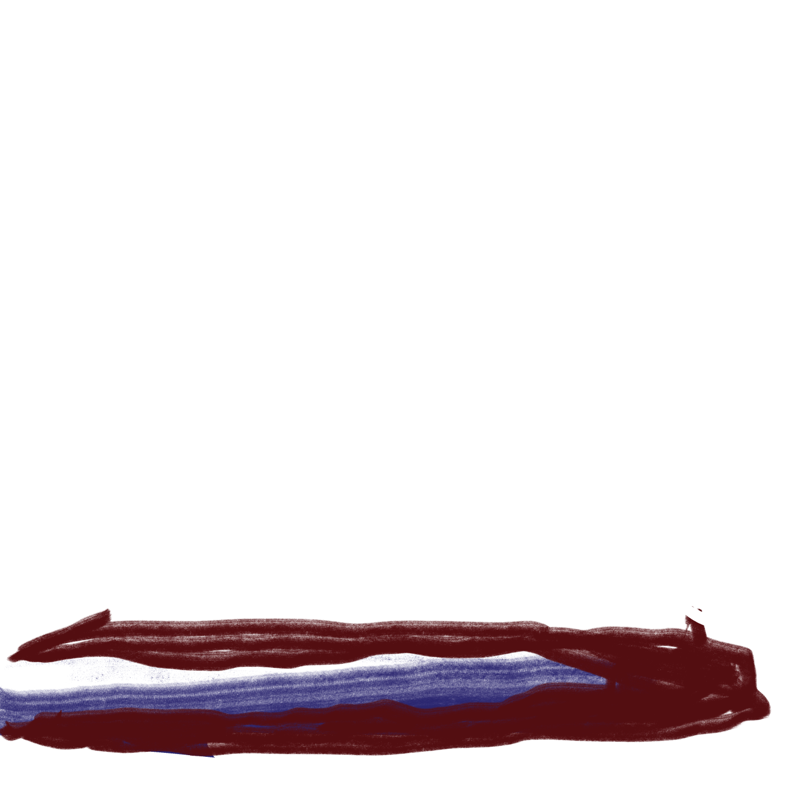
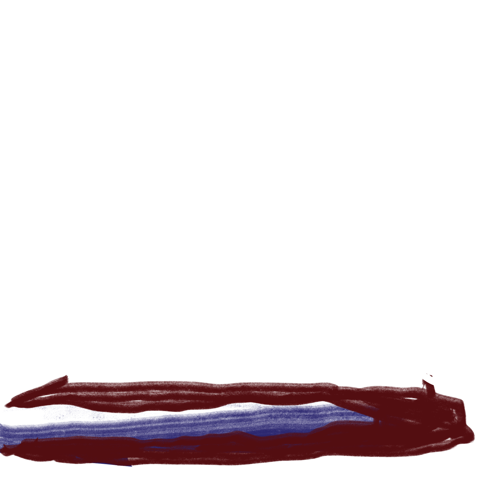

“A young nation has shallow roots and the slightest disturbance can throw out the equilibrium, patriotically speaking. Nationalism is nothing less than clutching at straws,” the author warns in the lovely 1998 novel “Eucalyptus.”
Bail devotes considerable attention to the connection between the appearance of the eucalyptus and the “Australian national character.” The novel, written by Australian author Murray Bail, describes an estate in New South Wales where a rather strange farmer grows every species of eucalyptus he can get his hands on.
His collection holds a few hundred varieties, and the farmer promises that he will marry off his daughter to anyone who is able to name them. Here’s Bail’s depiction of the tree:
“The gum tree has a pale ragged beauty. A single specimen can dominate an entire Australian hill. It’s an egotistical tree. Standing apart it draws attention to itself and soaks up moisture and all signs of life.”
 
